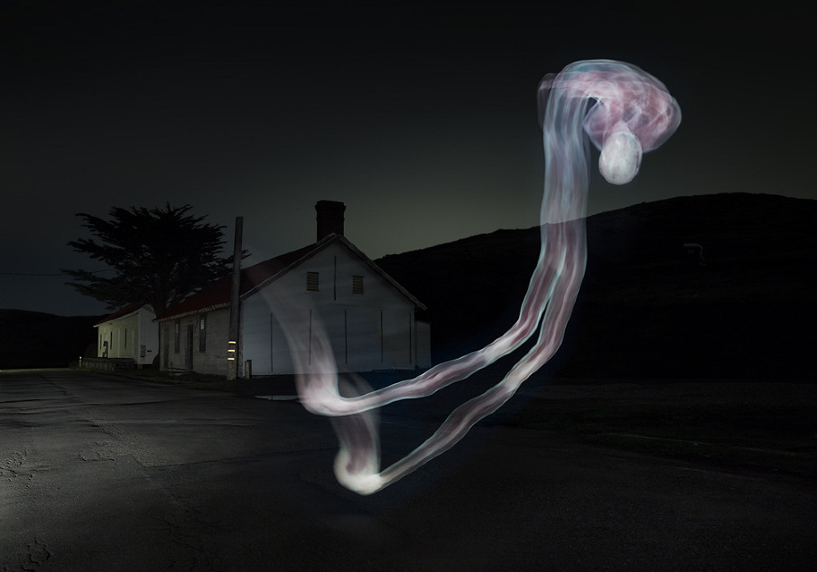
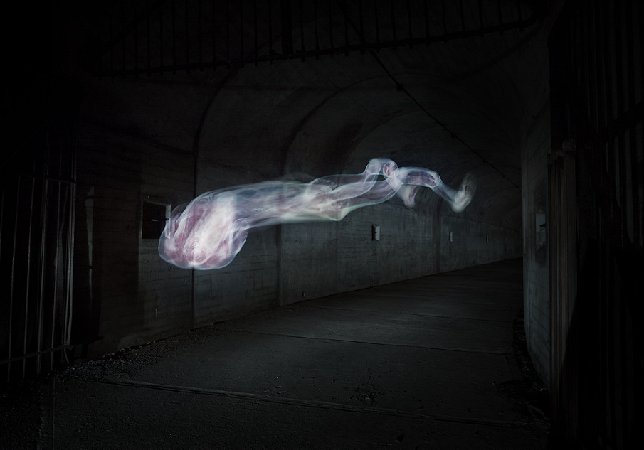
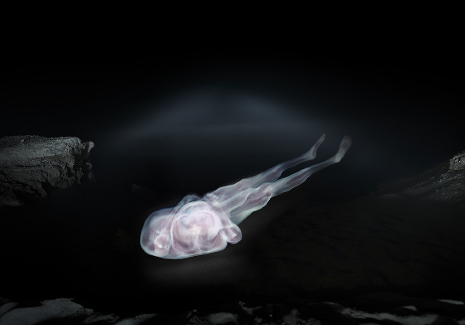

12:31
Using an animation of 1,871 slices of a human body from the Visible Human Project, Croix Gagnon and photographer Frank Schott created long-exposure photographs capturing “light paintings" of the body floating in space.
In 1993, a convicted murderer was executed. His body was given to science, segmented, and photographed for medical research. In 2011, we used photography to put it back together.
Read more about Project 12:31. For a far less creepy example of light painting with long-exposure photograph and details on how it was accomplished, check out Making Future Magic: iPad Light Painting.